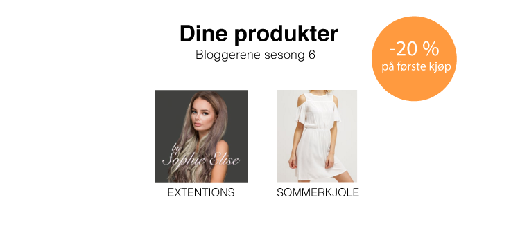
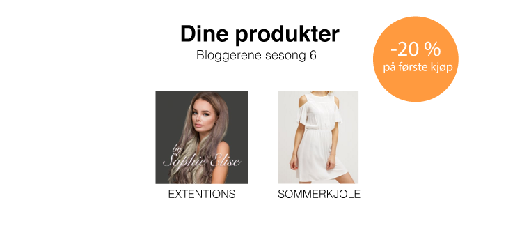

Oppdragsbeskrivelse
"Vi er på jakt etter et system for å presentere reklame for sluttbrukere på en slik måte at reklamen
oppfattes som ønsket informasjon. Siden vi leverer software for streaming, er vi ute etter en måte å
presentere informasjon om produktene i forbindelse med en video uten at det oppleves som for inntrengende
for sluttbrukeren."
Problemstilling
Vil det være mulig å presentere reklame for brukere på en måte som ikke oppfattes som slitsom og irriterende?
Hvordan kan en bruker enkelt gjennomføre et kjøp uten å måtte avbryte strømningen eller bli umotivert til kjøpet
på grunn av for mange trinn? Dette er noen av problemstillingene vi har tatt for oss og undersøkt under vårens
praksisperiode hos Vimond Media Solutions.
Oppdraget fra Vimond handlet om å lage et "proof of concept" enn å levere et ferdig produkt. Formålet var å verifisere
at konseptet har brukspotensiale og er levedyktig.
Generasjon Y
Målgruppen vår går fra 20-35 år. Disse utgjør den største prosentandelen av aktive kontoeiere av TV2 Sumo per februar 2016. Disse har vokste opp med Internett, den massive elektroniske utviklingen, andre kommunikasjonsmønstre og andre samlivsformer enn de tidligere generasjonene. Aldersgruppen er vant til å tilpasse seg forandringer. De er rasjonelle beslutningstakere som velger i stor grad hva de ønsker å se på selv.
Endelig løsning
"StrømmeReklame" vil ikke erstatte tradisjonell reklame, men være et supplement brukt i strømmetjenester. Tanken vår er dermed å gå bort fra de tradisjonelle pre-, mid- og end-roll reklamene. Dette er for å få er bedre brukeropplevelse og mer flyt i seeropplevelsen. Vår endelige løsning og utviklede prototype er tenkt innebygd i den eksisterende TV2 Sumo applikasjonen.
Løsningen gjør at produktene er tilgjengelig i samme øyeblikk som det blir presentert i programmet. I “Dine produkter” blir det presentert personlige produkter knyttet til programmet sluttbrukeren ser på. Nye produkt blir presentert og skyver eldre nedover i listen. Gevinster i form av gratis frakt, rabatter på neste kjøp eller gavekort tilbys for å få brukerne til å vende tilbake og engasjerer til videre bruk av løsningen.


 
